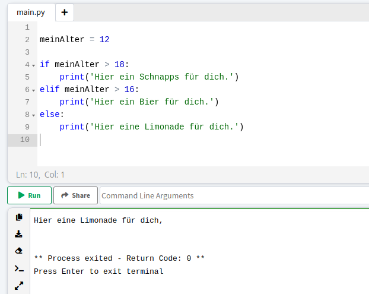

If-Verzweigen werden dann genutzt, wenn der Computer eine Entscheidung für eine bestimmte Bedingung treffen soll. Da Computer nur Befehle ausführen können müssen wir dem Computer sagen, wie er sich entscheiden soll. Und auch, was er für im Fall der verschiedenen Entscheidungen machen soll.
In Python wird das mit einer sogenannten If-Verzweigung geschrieben. Dafür gibt es das Signalwort if, dieses wird gefolgt von einer Bedingung, die der Computer prüfen kann. Wenn die Bedingung erfüllt ist, führt er die Befehle hinter dem Doppelpunkt aus. Die Befehle müssen, wie bei Funktionen um 4 Leerzeichen eingerückt sein. Wenn die Bedingung nicht erfüllt ist, dann werden die Befehle hinter dem Signalwort else ausgeführt. Hier siehst du ein Beispiel:
16):Bier else: kein Bier">Das ist eine gute Frage. Denn in Python gibt es neben den Signalwörtern if und else noch das Signalwort ifelse. Das kann genutzt werden um nach der If-Bedingung noch weitere Entscheidungsmöglichkeiten zu geben. Dabei wird wieder die Bedingung von dem Computer geprüft und nur, wenn die Bedingung erfüllt ist, werden die nachfolgenden Befehle ausgeführt.
Denk daran, ein Computer liest ein Skript strickt von oben nach unten. Er prüft die Bedingungen nach einander, bis er eine gefunden hat, die erfüllt ist. Dannach überspringt der Computer alle weiteren Optionen und arbeitet das Skript nach der Verzweigung weiter ab.
Mit den Verzweigungen kannst du zum Beispiel einen ersten ChatBot selber programmieren. Wenn du bereits weißt, wie du nach Eingaben innerhalb des Programms fragt, gehe gleich zur Praxis, ansonsten lese dir die Seite zu Eingaben in Python davor durch.
Eingabgen in Python Verzweigungen in der Praxis